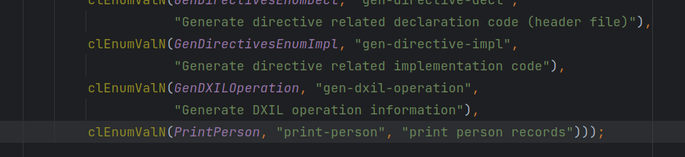

TableGen语法
error
产能不足，未完成的内容。
tablegen应该是llvm后端中一个非常核心的部分，也是我学习llvm后端的一个开始。
tablegn是一种记录描述语言，最终生成的东西就类似于一条一条的记录，而且这些记录都是静态的，并不会产生任何的动态结果。
tablegen语言由两个部分组成，一个是其自身的解释器，负责读取tablegen输入，将其转化为内存中一条一条的记录。
在这个例子中，我们将会用tablegen来写一些表达式，并完成对应的后端，对表达式进行求解计算，所以整体功能会看着像一个计算器一样。
class
定义了记录的类型，和C++里面的class类似，都是类型，不过具体使用会有所不同，这一点在后面会看到。
1 | class Person { |
这样声明了一个Person类型，可以被后面的def用来生成一条记录，这里的Age字段默认为0。
同时也可以像模板一样接受模板参数：
1 | class PersonTemplate <int age> { |
def
定义一条记录，例如声明一个类型为Person的记录：
1 | def aana: Person; |
由于在上面，我们默认了Age为0，如果需要修改就需要对此字段进行覆盖：
1 | def aana : Person{ |
如果使用了模板化的版本，那么直接使用模板参数就好了：
1 | def aana: PersonTemplate<19>; |
如果有需要，甚至可以直接在class的基础上增加一个字段，这种方式有点类似于是产生了一个匿名的子类，然后有一个对象实例化了这个子类：
1 | def aana: Person{ |
后端如何操作（1）
在下一步学习更多的语法之前，现在就可以看看后端如何操作现在生成的记录了，现在距离实现计算器的功能还有很远，我们只是尝试一下打印出所有生成的记录，事实上，本身就有一个后端用于输出tablegen中定义的记录，不过我们手动过一边，以掌握其中原理。
1 | class Person { |
为tablegn增加一个后端，叫做print-person，tablegen的入口函数在utils/TableGen/TableGen.cpp，main会调用lib/TableGen/Main.cpp/llvm::TableGenMain，其中会对tablegen文件进行解析，形成一条一条的记录，保存在RecordKeeper对象中，然后再跳转到LLVMTableGenMain，同时将解析出来的RecordKeeper传给它，在这之中会根据Action值来选择之后需要进行的操作：
Action值来自于命令行，参数：
所以在这个cl:values列表的最后加入一个对应的选项print-person就行了，不过这之前需要在枚举ActionType的末尾先加入一个枚举值PrintPerson，加好之后的结果如下：

在加入了相关的选项之后，下一步就应该让RecordKeeper数据传递给对应的后端了，所以需要完成后端，然后在LLVMTableGenMain的switch中添加一个对应的项。
创建一个文件utils/TableGen/PersonPrinter.cpp，然后将lib/TableGen/TableGenBackendSkeleton.cpp中的内容复制到里面，然后将类名从SkeletonEmitter改为PersonPrinter就行了。
对代码不需要做过多的解释，只需要说一下大概就行了。
引用
[1] https://llvm.org/docs/TableGen/ProgRef.html
[2] https://llvm.org/docs/TableGen/BackGuide.html
[3] https://llvm.org/docs/TableGen/BackEnds.html